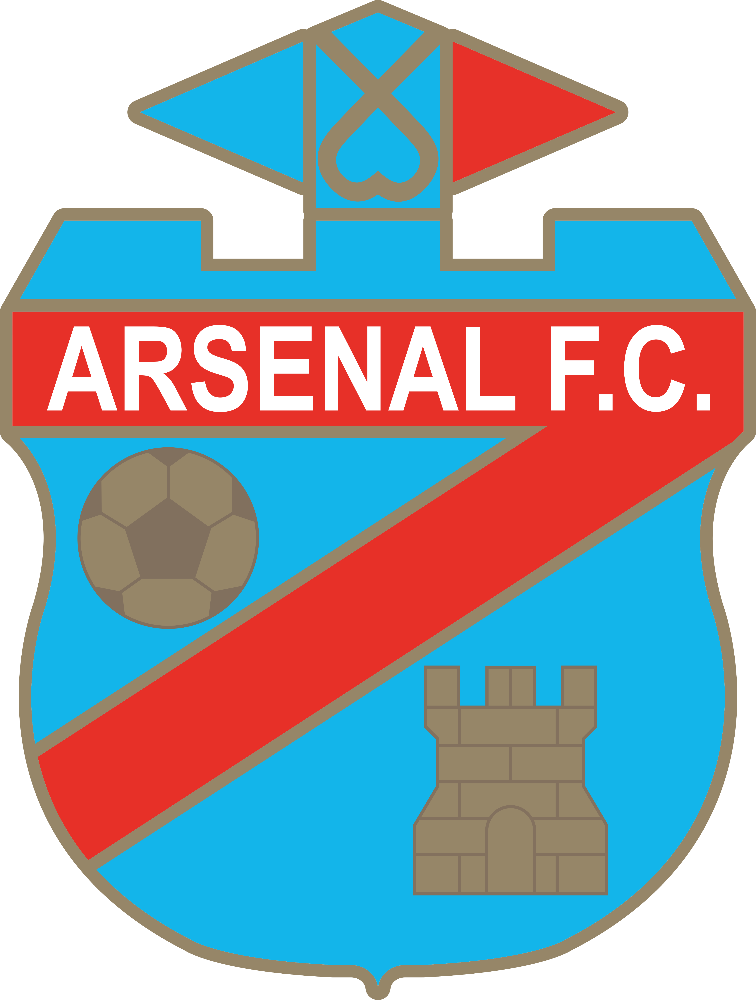
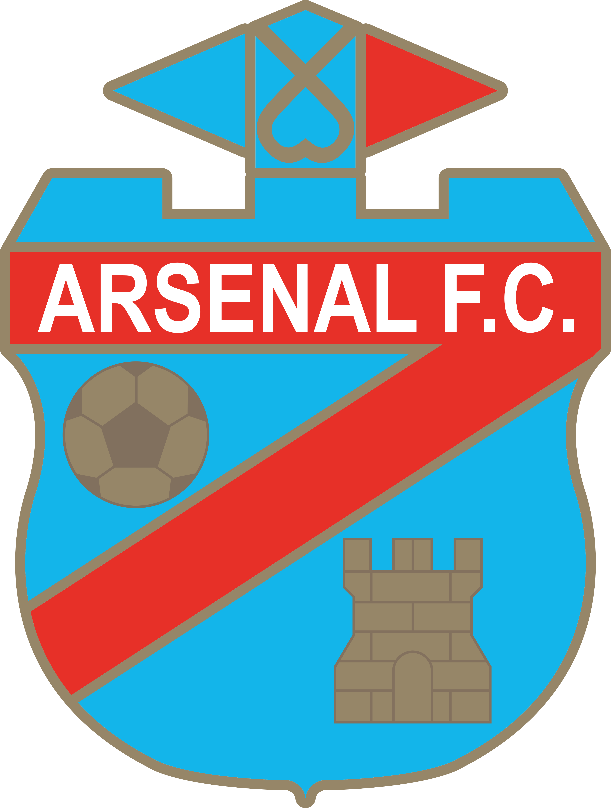

1 - 0
Talleres vs Arsenal
Primera división
Sábado 10 de Junio, 2023 Estadio "Mario Alberto Kempes"
Talleres no tuvo esta noche su mejor versión, pero le alcanzó para sumar otra vez tres puntos y quedar a tiro de River, el único líder que tiene la Liga Profesional. El equipo cordobés suma 40 unidades y se ubicó a uno de River, aunque los conducidos por Martín Demichelis todavía tienen que jugar en esta fecha ante Banfield y además deben completar el partido suspendido con Defensa y Justicia.
HISTORIAL
Ganados: 17
Empatados: 12
Perdidos: 9